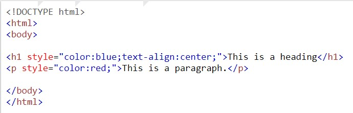

Inline CSS
An inline style may be used to apply a unique style for a single element.
To use inline styles, add the style attribute to the relevant element. The style attribute can contain any CSS property.
Example:

Output

If you want to read or learn more click on read more
read More